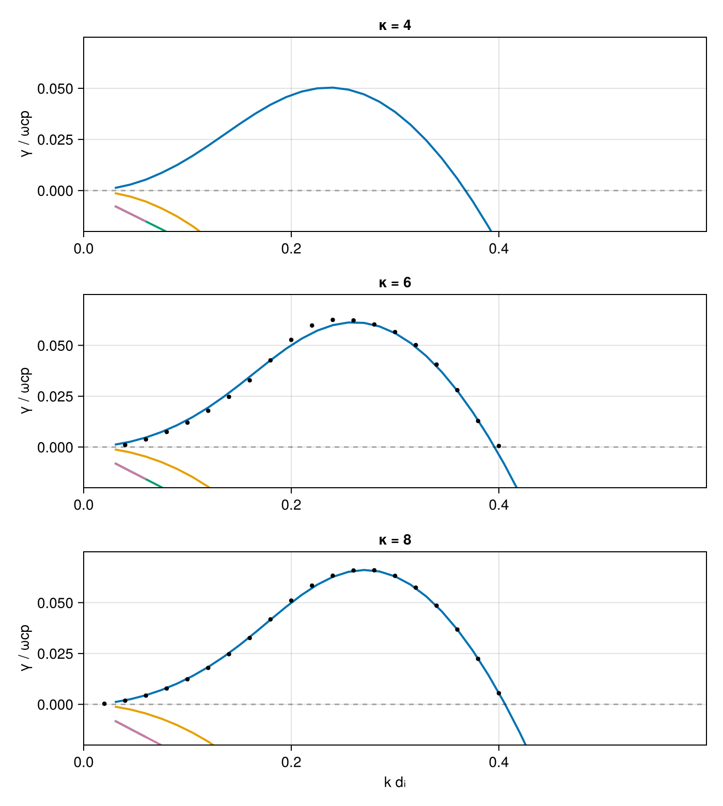

Oblique proton firehose — coupled bi-kappa protons
Oblique proton firehose driven by an anisotropic coupled kappa distribution f_p ∝ [1 + v∥²/(κc∥²) + v⊥²/(κc⊥²)]^{-(κ+1)} with T∥p = 2 T⟂p at θ = 45°, Maxwellian electrons, for κ ∈ {4, 6, 8}.
Reference: Guo (Fig. 1, arXiv:2606.14439)
using VlasovMaxwellDispersion
using DelimitedFiles, Printf, Unitful
using CairoMakiePlasma setup
κs = (4.0, 6.0, 8.0)
kappa_proton(κ) = sc -> LowRankVDF(
BiKappa(; vth_para=sc.vth, vth_perp=sc.vth_perp, kappa=κ);
rtol=1.0e-10, para=(-10sc.vth, 10sc.vth), perp=10sc.vth_perp
)
n = 5.0e19u"m^-3"
Tpara, Tperp = 1986.734u"eV", 993.367u"eV"
electron = Species(Electron(); n, T=496.683u"eV")
plasmas = map(κs) do κ
proton = Species(Proton(), kappa_proton(κ); n, T=(Tpara, Tperp))
Plasma(proton, electron; B0=0.1u"T")
end(Plasma{Tuple{Species{Particle{Float64, Float64}, Float64, Main.var"#kappa_proton##0#kappa_proton##1"{Float64}, @NamedTuple{T::Tuple{Unitful.Quantity{Float64, 𝐋^2 𝐌 𝐓^-2, Unitful.FreeUnits{(eV,), 𝐋^2 𝐌 𝐓^-2, nothing}}, Unitful.Quantity{Float64, 𝐋^2 𝐌 𝐓^-2, Unitful.FreeUnits{(eV,), 𝐋^2 𝐌 𝐓^-2, nothing}}}}}, Species{Particle{Float64, Float64}, Float64, Nothing, @NamedTuple{T::Unitful.Quantity{Float64, 𝐋^2 𝐌 𝐓^-2, Unitful.FreeUnits{(eV,), 𝐋^2 𝐌 𝐓^-2, nothing}}}}}, Float64, Particle{Float64, Float64}}((Species{Particle{Float64, Float64}, Float64, Main.var"#kappa_proton##0#kappa_proton##1"{Float64}, @NamedTuple{T::Tuple{Unitful.Quantity{Float64, 𝐋^2 𝐌 𝐓^-2, Unitful.FreeUnits{(eV,), 𝐋^2 𝐌 𝐓^-2, nothing}}, Unitful.Quantity{Float64, 𝐋^2 𝐌 𝐓^-2, Unitful.FreeUnits{(eV,), 𝐋^2 𝐌 𝐓^-2, nothing}}}}}(Particle{Float64, Float64}(1.602176634e-19, 1.67262192369e-27), 5.0e19, Main.var"#kappa_proton##0#kappa_proton##1"{Float64}(4.0), (T = (1986.734 eV, 993.367 eV),)), Species{Particle{Float64, Float64}, Float64, Nothing, @NamedTuple{T::Unitful.Quantity{Float64, 𝐋^2 𝐌 𝐓^-2, Unitful.FreeUnits{(eV,), 𝐋^2 𝐌 𝐓^-2, nothing}}}}(Particle{Float64, Float64}(-1.602176634e-19, 9.1093837015e-31), 5.0e19, nothing, (T = 496.683 eV,))), 0.1, Particle{Float64, Float64}(1.602176634e-19, 1.67262192369e-27)), Plasma{Tuple{Species{Particle{Float64, Float64}, Float64, Main.var"#kappa_proton##0#kappa_proton##1"{Float64}, @NamedTuple{T::Tuple{Unitful.Quantity{Float64, 𝐋^2 𝐌 𝐓^-2, Unitful.FreeUnits{(eV,), 𝐋^2 𝐌 𝐓^-2, nothing}}, Unitful.Quantity{Float64, 𝐋^2 𝐌 𝐓^-2, Unitful.FreeUnits{(eV,), 𝐋^2 𝐌 𝐓^-2, nothing}}}}}, Species{Particle{Float64, Float64}, Float64, Nothing, @NamedTuple{T::Unitful.Quantity{Float64, 𝐋^2 𝐌 𝐓^-2, Unitful.FreeUnits{(eV,), 𝐋^2 𝐌 𝐓^-2, nothing}}}}}, Float64, Particle{Float64, Float64}}((Species{Particle{Float64, Float64}, Float64, Main.var"#kappa_proton##0#kappa_proton##1"{Float64}, @NamedTuple{T::Tuple{Unitful.Quantity{Float64, 𝐋^2 𝐌 𝐓^-2, Unitful.FreeUnits{(eV,), 𝐋^2 𝐌 𝐓^-2, nothing}}, Unitful.Quantity{Float64, 𝐋^2 𝐌 𝐓^-2, Unitful.FreeUnits{(eV,), 𝐋^2 𝐌 𝐓^-2, nothing}}}}}(Particle{Float64, Float64}(1.602176634e-19, 1.67262192369e-27), 5.0e19, Main.var"#kappa_proton##0#kappa_proton##1"{Float64}(6.0), (T = (1986.734 eV, 993.367 eV),)), Species{Particle{Float64, Float64}, Float64, Nothing, @NamedTuple{T::Unitful.Quantity{Float64, 𝐋^2 𝐌 𝐓^-2, Unitful.FreeUnits{(eV,), 𝐋^2 𝐌 𝐓^-2, nothing}}}}(Particle{Float64, Float64}(-1.602176634e-19, 9.1093837015e-31), 5.0e19, nothing, (T = 496.683 eV,))), 0.1, Particle{Float64, Float64}(1.602176634e-19, 1.67262192369e-27)), Plasma{Tuple{Species{Particle{Float64, Float64}, Float64, Main.var"#kappa_proton##0#kappa_proton##1"{Float64}, @NamedTuple{T::Tuple{Unitful.Quantity{Float64, 𝐋^2 𝐌 𝐓^-2, Unitful.FreeUnits{(eV,), 𝐋^2 𝐌 𝐓^-2, nothing}}, Unitful.Quantity{Float64, 𝐋^2 𝐌 𝐓^-2, Unitful.FreeUnits{(eV,), 𝐋^2 𝐌 𝐓^-2, nothing}}}}}, Species{Particle{Float64, Float64}, Float64, Nothing, @NamedTuple{T::Unitful.Quantity{Float64, 𝐋^2 𝐌 𝐓^-2, Unitful.FreeUnits{(eV,), 𝐋^2 𝐌 𝐓^-2, nothing}}}}}, Float64, Particle{Float64, Float64}}((Species{Particle{Float64, Float64}, Float64, Main.var"#kappa_proton##0#kappa_proton##1"{Float64}, @NamedTuple{T::Tuple{Unitful.Quantity{Float64, 𝐋^2 𝐌 𝐓^-2, Unitful.FreeUnits{(eV,), 𝐋^2 𝐌 𝐓^-2, nothing}}, Unitful.Quantity{Float64, 𝐋^2 𝐌 𝐓^-2, Unitful.FreeUnits{(eV,), 𝐋^2 𝐌 𝐓^-2, nothing}}}}}(Particle{Float64, Float64}(1.602176634e-19, 1.67262192369e-27), 5.0e19, Main.var"#kappa_proton##0#kappa_proton##1"{Float64}(8.0), (T = (1986.734 eV, 993.367 eV),)), Species{Particle{Float64, Float64}, Float64, Nothing, @NamedTuple{T::Unitful.Quantity{Float64, 𝐋^2 𝐌 𝐓^-2, Unitful.FreeUnits{(eV,), 𝐋^2 𝐌 𝐓^-2, nothing}}}}(Particle{Float64, Float64}(-1.602176634e-19, 9.1093837015e-31), 5.0e19, nothing, (T = 496.683 eV,))), 0.1, Particle{Float64, Float64}(1.602176634e-19, 1.67262192369e-27)))Seedless surveys, one per κ
k is swept over k·dᵢ ∈ [0.03, 0.45]; the protons' scales(plasma, 1).d is dᵢ = c/ωpp = vA/ωcp (the paper's λ_p) in VMD's c/ωcp units.
di = scales(first(plasmas), 1).d # same for every κ
ω_region = (-0.1 - 0.25im, 0.5 + 0.12im)
geom = AngleSweep(k=collect(0.03:0.015:0.45) ./ di, theta=deg2rad(45))
sols = map(pl -> solve(DispersionProblem(pl, ω_region, geom)), plasmas)(SurveySolution(retcode=Success, 7 roots, 28209 evals, 2.02 s), SurveySolution(retcode=Success, 7 roots, 24357 evals, 0.632 s), SurveySolution(retcode=Success, 7 roots, 17578 evals, 0.431 s))Verification against PlasmaBO
The reference (bo_case1_ref.tsv) is the unstable branch from PlasmaBO's Hermite–Hermite solver (N = 2, J = 24) for κ = 6, 8. At κ = 4 the HH fit of the sampled kappa distribution is poor in the tails and is omitted; VMD evaluates the analytic bi-kappa susceptibility.
ref = readdlm(joinpath(@__DIR__, "bo_case1_ref.tsv"); comments=true)
kdi(b) = [sqrt(abs2(k)) * di for k in b.k]
# ref grid (Δk = 0.02) is offset from the survey grid (Δk = 0.015): nearest
# sample is ≤ 0.0075 away, so gate at half the survey spacing
γmax(sol, x0) = maximum(
maximum((imag(ω) for (x, ω) in zip(kdi(b), b.omega) if isfinite(ω) && abs(x - x0) < 0.008); init=(-Inf))
for b in sol.roots
)
for (κ, sol) in zip(κs, sols)
rows = ref[ref[:, 4] .== κ, :]
isempty(rows) && continue
Δmax = 0.0
for r in eachrow(rows)
r[3] > 0.005 || continue
Δmax = max(Δmax, abs(γmax(sol, r[1]) - r[3]))
end
@printf("κ=%.0f max |γ_vmd - γ_ref| = %.1e ωcp\n", κ, Δmax)
endκ=6 max |γ_vmd - γ_ref| = 4.4e-03 ωcp
κ=8 max |γ_vmd - γ_ref| = 4.5e-03 ωcpAgreement at the few-10⁻³ ωcp truncation level of the reference's Hermite–Hermite expansion, as for the Astfalk case.
Growth rates
Colored: all surveyed branches; black dots: PlasmaBO track (κ = 6, 8). Peak growth γ ≈ 0.05–0.066 ωcp near k·dᵢ ≈ 0.25 grows with κ.
fig = Figure(size=(700, 780))
palette = Makie.wong_colors()
for (i, (κ, sol)) in enumerate(zip(κs, sols))
ax = Axis(
fig[i, 1]; ylabel="γ / ωcp", title="κ = $(round(Int, κ))",
xlabel=i == 3 ? "k dᵢ" : ""
)
for (j, b) in enumerate(sol.roots)
x = kdi(b)
p = sortperm(x)
lines!(ax, x[p], imag.(b.omega)[p]; color=palette[mod1(j, length(palette))], linewidth=2)
end
rows = ref[ref[:, 4] .== κ, :]
isempty(rows) || scatter!(ax, rows[:, 1], rows[:, 3]; color=:black, markersize=6)
hlines!(ax, [0.0]; color=(:black, 0.3), linestyle=:dash)
xlims!(ax, 0, 0.6)
ylims!(ax, -0.02, 0.075)
end
fig
This page was generated using Literate.jl.